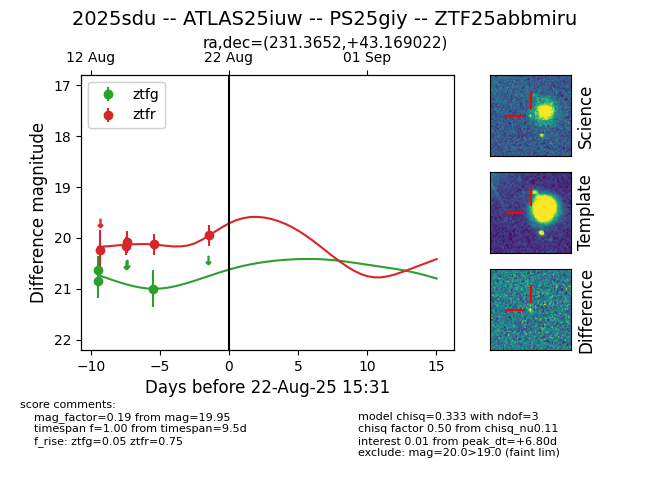

Target 2025sdu at 2025-08-22 16:11, see:
FINK: fink-portal.org/ZTF25abbmiru
Lasair: lasair-ztf.lsst.ac.uk/objects/ZTF25abbmiru
ALeRCE: alerce.online/object/ZTF25abbmiru
TNS: wis-tns.org/object/2025sdu
YSE: ziggy.ucolick.org/yse/transient_detail/2025sdu
alt names
ZTF25abbmiru (ztf,alerce)
2025sdu (tns,yse)
ATLAS25iuw (atlas)
PS25giy (panstarrs)
coordinates:
equatorial (ra, dec) = (231.3652,+43.16902)
galactic (l, b) = (70.4486,+55.07631)
photometry
last ztfg=21.00, ztfr=19.95
3 ztfg, 5 ztfr detections
